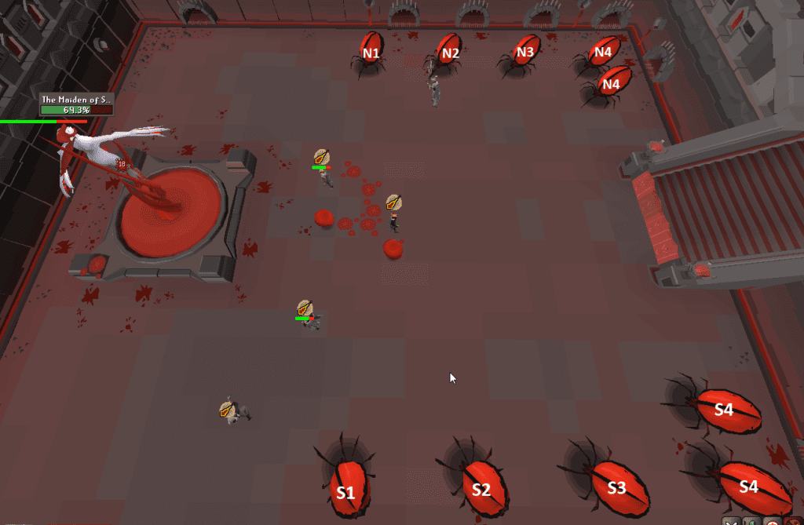
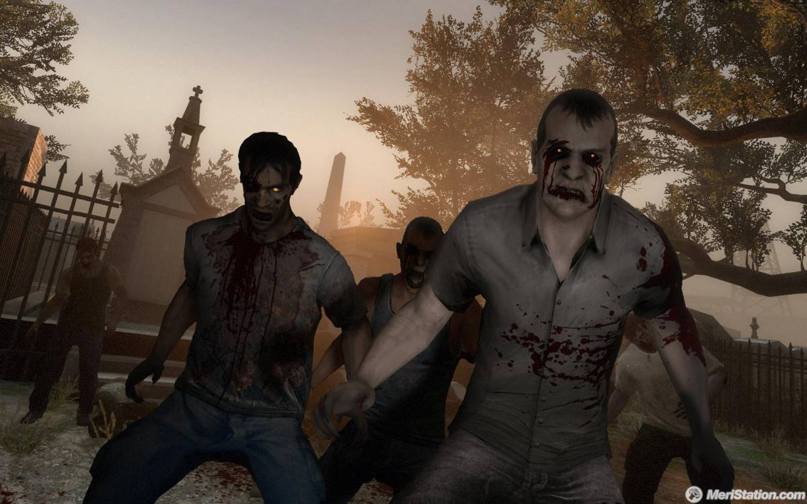
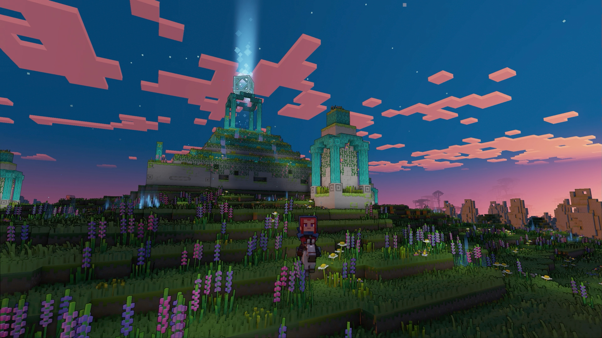
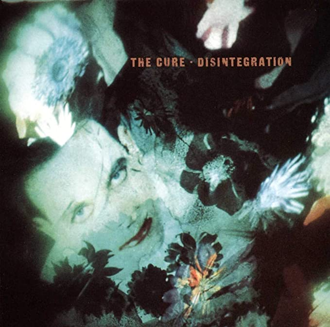
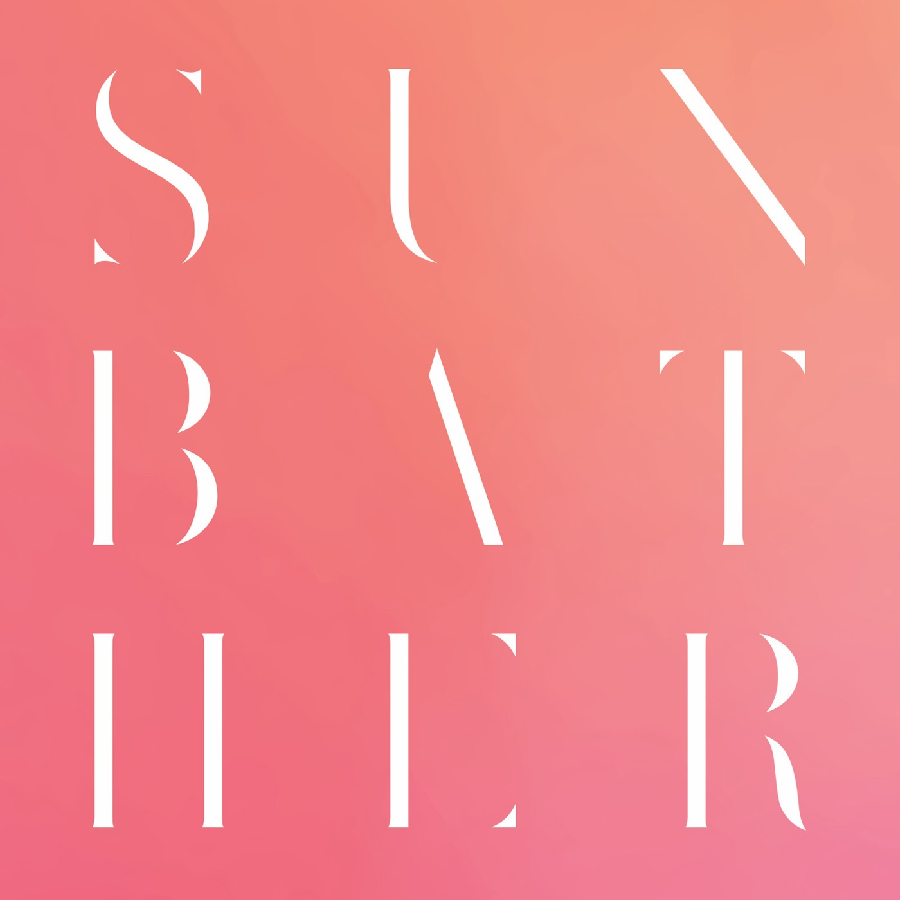
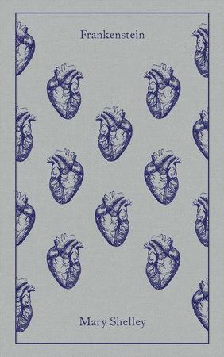
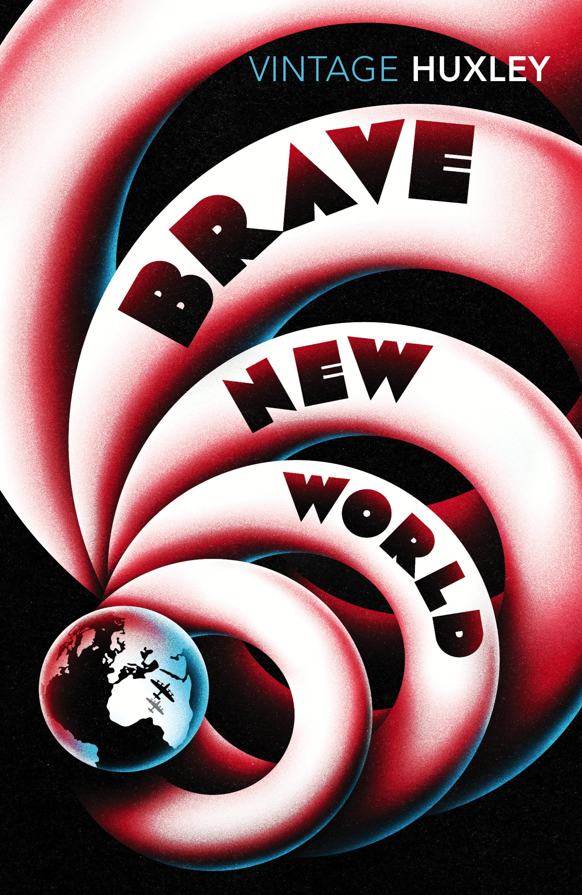
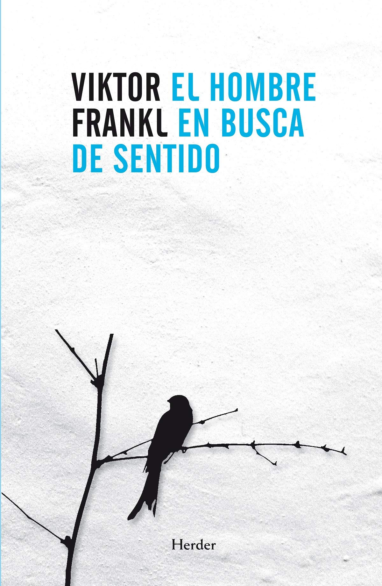

A continuación mostraré una lista de mis pasatiempos favoritos y lo que más me gusta hacer.
Mi pasatiempo favorito es jugar videojuegos, si tengo un rato libre lo que más me gusta hacer y lo primero que se me ocurre es jugar videojuegos.
Entre mis videojuegos favoritos se encuentran los siguientes:
Old School Runescape: Es mi videojuego favorito actualmente, ya que al ser un MMMORPG hay muchísimas cosas por hacer y con mucha gente para conocer.
Recientemente llegué al máximo nivel en mi cuenta y me estoy enfocando en pasar los jefes y mazmorras más difíciles.

Left 4 Dead 2: Es un shooter de zombies en primera persona, me gusta porque es un juego que puedes jugar unas partidas rápidas sin tener
que dedicar mucho tiempo y es muy entretenido, sobre todo si juegas con amigos. Además la comunidad crea niveles de alta calidad que permiten
tener nuevas experiencias

Minecraft: Es un juego que todos conocen, tiene una comunidad grandísima, muchos servidores en los cuales te puedes unir y tiene rejugabilidad
infinita, ya que puedes hacer y construir todo lo que se te venga a la mente.

Otro de mis pasatiempos favoritos es escuchar música, escucho casi de todo tipo de música y casi no hay nada que no me guste, pero tengo algunos
gustos que me gustan más que otros. Por ejemplo, mis bandas, compositores o artistas de música favoritos son:
The Cure: Es una banda inglesa de rock formada en los 70s. Su larga trayectoria les ha permitido grabar decenas de álbumes, pero mi favorito de ellos
es: Disintegration.

Deafheaven: Es una banda de black metal estadounidense formada en el 2010 en San Francisco, California. El grupo es caracterizado por sus presentaciones en vivo.
Mi álbum favorito de esta banda es Sunbather

My Chemical Romance: Es también una de mis bandas favoritas. Es una banda de rock estadounidense que se formó a principio de los 2000.
Después de sacar 4 álbumes se separaron en 2013 y recientemente en el 2019 anunciaron reuniones y tours.
También me gusta leer libros, sobre todo novelas clásicas, aunque no leo muchas ya que son caras o difíciles de encontrar, busco las que me
interesan en la biblioteca del ITSON.
Entre las novelas que he leído más recientemente están:
Frankenstein o el moderno Prometeo, de Mary Shelley: es la novela más reciente que he leído y mi favorita actualmente.
Me gustan los temas tratados y la historia de como una criatura inocente se vuelve agresiva y resentida debido al rechazo y desprecio de la sociedad.

Un mundo feliz, de Aldous Huxley: Una historia que trata sobre una sociedad distópica en la que la humanidad es "cultivada", es decir, que se
hace uso de la eugenesia para darle a las personas rasgos deseados y adjudicarles un puesto en la sociedad según sus características.

El Hombre en Busca de Sentido, de Viktor Frankl: Este libro es como una autobiografía del doctor Viktor Frankl, un doctor judío que narra sus experiencias
como un prisionero en un campo de concentración Nazi, y cómo desarrolló un método psicoterapeuto para poder afrontar las terribles actividades que los
obligaban a realizar, buscándole un sentido a la vida y una razón para ser feliz y mantenerse positivo.
